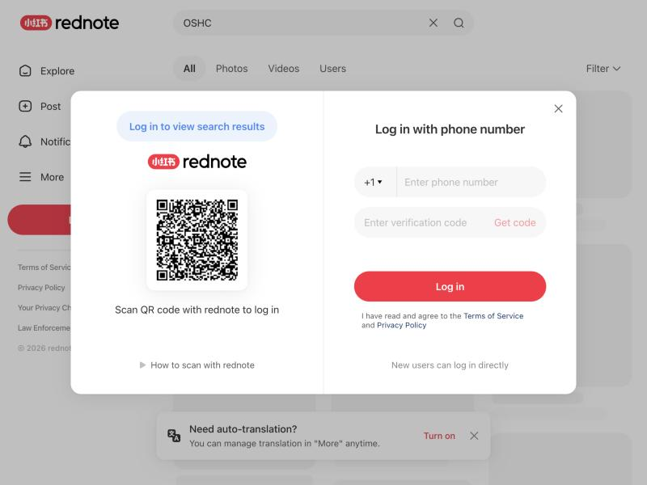
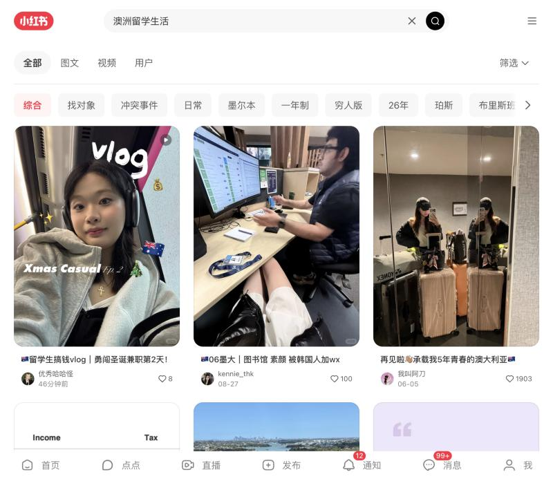
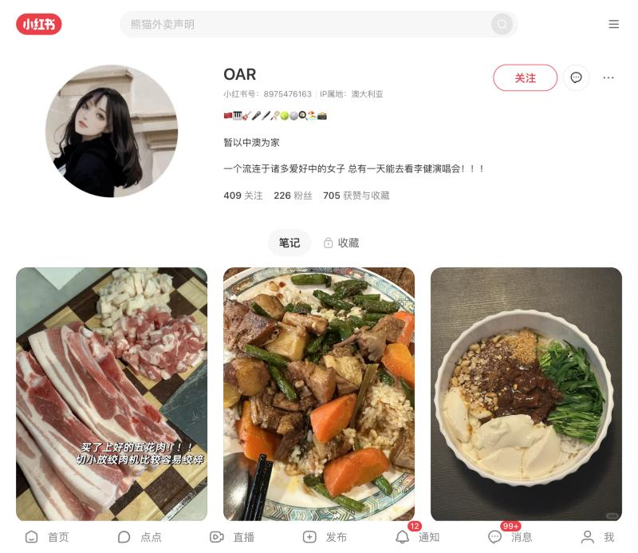

Goal: find small Chinese creators who share student life or everyday life in Australia (international students or long-term residents). All 8 steps below have been run end to end. The agent browses slowly and only views: no likes, follows, comments or DMs.
Each stage narrows the pool. A creator moves on only if they pass the gate on the right.
Search doesn't work without logging in. A team member scans the QR code with the phone app. The agent never handles passwords.
For example: 澳洲留学生活 (study life in Australia), 悉尼留学日常 (Sydney student daily life), 墨尔本留学 (studying in Melbourne), 澳洲华人日常 (Chinese daily life in Australia), 悉尼生活日常 (Sydney daily life), 澳洲生活分享 (life in Australia).
Default ranking puts big accounts first. Scroll down and open posts that are only hours old with fewer than 30 likes, then go to the author's profile.
Followers, likes and IP location show on the profile (almost every profile shows the IP). The bio shows identity: school, or long-term signals such as years in Australia, owning a home, or permanent residency.
Profiles don't show post dates, so posting frequency is estimated from the latest few posts.
Each post has to be opened one by one, so this is done only for shortlisted creators.
The platform doesn't label ads. Rules used:
• New account + single-digit following + likes dozens of times the follower count → likely account farm
• Every title is "🇦🇺 + question" with many soft ads → likely agency (MCN) account
• Hidden IP location → downgrade
• Sells agency services, other insurance or their own business → exclude or downgrade
Each creator is logged with platform ID, followers and tier, city, identity, content focus, activity, red flags and source keyword, then scored and grouped into Recommend / Consider / Not recommended.
蒲公英 (Pugongying) is Xiaohongshu's official creator marketplace. Use this process to build the shortlist, then look each creator up in 蒲公英.



Next: every creator found this way goes into the Creator Library. Full text: references/creator-finding.md.